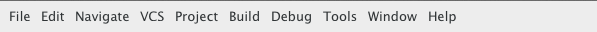

3. The Menu Bar¶
GPS provides a standard menu bar giving access to all operations. However,
it is usually easier to access a feature using the various contextual menus
provided throughout GPS: these give direct access to the most relevant
actions in the current context (for example, a project, directory, file, or
entity). Contextual menus pop up when you click the right mouse button or
use the special open contextual menu key on most keyboards.
You can access the following entries from the menu bar:
- File (see The File Menu)
- Edit (see The Edit Menu)
- Navigate (see The Navigate Menu)
- Find (see The Find Menu)
- View (see The View Menu)
- Code (see The Code Menu)
- VCS (see The VCS Menu)
- Build (see The Build Menu)
- Analyze (see The Analyze Menu)
- Debug (see The Debug Menu)
- SPARK (see The SPARK Menu)
- CodePeer (see The CodePeer Menu)
- Window (see The Window Menu)
- Help (see The Help Menu)
3.1. The File Menu¶
File ‣ New Project...
Open a dialog to create a new project from an existing template
File ‣ Open Project...
Open the Open Project dialog
File ‣ Open Project from Host...
Open remote project
File ‣ Project ‣ Add Complex File Naming Conventions...
Ask naming patterns to the user and run gnatname on the current project to add the files located in the project’s source directories matching these patterns to project’s sources files.
File ‣ Project ‣ Reload Project
Recompute the list of source files for the project. This should be used whenever you create or remove files outside of GPS
File ‣ New File
Create a new empty editor
File ‣ New File View
Create a new view for the selected editor
File ‣ Open File...
Open an existing file
Shortcut: F3
File ‣ Open File from Host...
Open a file from a remote host
Shortcut: Ctrl+F3
File ‣ Save
Save the current editor
Shortcut: Ctrl+S
File ‣ Save As...
Save the current editor with a different name
File ‣ Save More ‣ All
Save all modified files and projects
File ‣ Save More ‣ Projects
Save all modified projects to disk
File ‣ Save More ‣ Desktop
Save the layout of the desktop to a file, so that it is restored when GPS is restarted later with the same project
File ‣ Change Directory...
Change the current directory
File ‣ Locations ‣ Export Locations to Editor
Export all messages listed in the Locations view to an editor.
File ‣ Print
Print the current editor
File ‣ Close
Close the currently selected window
Shortcut: Ctrl+W
File ‣ Close All
Close all open windows, asking for confirmation when relevant
File ‣ Close All Editors
Save and close all source editors.
File ‣ Close All Editors except Current
Save and close all source editors, except the curret one.
File ‣ Reset all perspectives
Reset all perspectives for all projects to their default. This also closes all editors.
File ‣ Exit
Exit GPS, after confirming whether to save modified files
Shortcut: Ctrl+Q
3.2. The Edit Menu¶
Edit ‣ Undo
Undo the last command
Shortcut: Ctrl+Z
Edit ‣ Redo
Redo the last command that was undone
Shortcut: Ctrl+R
Edit ‣ Cut
Cut the current selection to the clipboard
Shortcut: Shift+Delete or Ctrl+X
Edit ‣ Copy
Copy the current selection to the clipboard
Shortcut: Ctrl+Insert or Ctrl+C
Edit ‣ Paste
Paste the contents of the clipboard into the current text area
Shortcut: Shift+Insert or Ctrl+V
Edit ‣ Paste Previous
Cancel the previous Paste operation, and instead insert the text copied before through Copy To Clipboard
Shortcut: Shift+Ctrl+Insert
Edit ‣ Select All
Select the whole contents of the editor
Edit ‣ Cursors ‣ Add cursor and go down
Shortcut: Shift+Alt+Down
Edit ‣ Cursors ‣ Add cursor and go up
Shortcut: Shift+Alt+Up
Edit ‣ Cursors ‣ Cursor select next occurence of selection
Shortcut: Shift+Ctrl+N
Edit ‣ Cursors ‣ Cursor skip next occurence of selection
Shortcut: Ctrl+Alt+N
Edit ‣ Cursors ‣ Add cursors to all references of entity
Shortcut: Shift+Ctrl+E
Edit ‣ Insert File...
Insert the contents of the file into the current editor
Edit ‣ Compare ‣ Two Files...
Compare two files
Edit ‣ Compare ‣ Three Files...
Compare three files
Edit ‣ Increase Text Size
Increase the size of fonts in the source editors. This impacts the corresponding preferences.
Shortcut: Ctrl++
Edit ‣ Decrease Text Size
Decrease the size of fonts in the source editors. This impacts the corresponding preferences.
Edit ‣ Project Properties...
Open the project properties editor
Edit ‣ Preferences...
Open (or reuse if it already exists) the ‘Preferences’ view
3.3. The Navigate Menu¶
Navigate ‣ Back
Goto previous location
Shortcut: Shift+Ctrl+{
Navigate ‣ Forward
Goto next location
Shortcut: Shift+Ctrl+}
Navigate ‣ Goto Declaration
Jump to the declaration of the current entity
Navigate ‣ Goto Body
Jump to the implementation/body of the current entity
Navigate ‣ Goto Matching Delimiter
Jump to the matching delimiter ()[]{}
Shortcut: Ctrl+’
Navigate ‣ Goto Line...
Open a dialog to select a line to go to
Shortcut: Ctrl+G
Navigate ‣ Goto File Spec<->Body
Open the corresponding spec or body file
Navigate ‣ Locate in Files view
Display the files view, and expand nodes to show the selected file
Navigate ‣ Add Bookmark
Create a bookmark at the current location in the editor
Navigate ‣ Start of Statement
Move to the beginning of the current statement
Shortcut: Alt+Up
Navigate ‣ End of Statement
Move to the end of the current statement
Shortcut: Alt+Down
Navigate ‣ Previous Subprogram
Move to the previous subprogram
Shortcut: Ctrl+Up
Navigate ‣ Next Subprogram
Move to the next subprogram
Shortcut: Ctrl+Down
Navigate ‣ Previous Locations Message
Move to the previous message from the Locations window
Shortcut: Ctrl+<
Navigate ‣ Next Locations Message
Move to the next message from the Locations window
Shortcut: Ctrl+>
3.4. The Find Menu¶
Find ‣ Find...
Open the search dialog. If you have selected the preference Search/Preserve search context, the same context will be selected, otherwise the context is reset depending on the active window
Shortcut: Ctrl+F
Find ‣ Replace...
Open the search dialog in the replace mode. If you have selected the preference Search/Preserve Search Context, the same context will be selected, otherwise the context is reset depending on the active window
Shortcut: Shift+Ctrl+F
Find ‣ Find Previous
Find the previous occurrence of the search pattern
Shortcut: Ctrl+P
Find ‣ Find Next
Find the next occurrence of the search pattern
Shortcut: Ctrl+N
Find ‣ Find Action
Search amongst the GPS commands, and execute the selected one
Find ‣ Find Bookmark
Search amongst all bookmarks
Find ‣ Find Build Target
Search amongst build targets
Find ‣ Find in Current Source
Search for references in the current editor
Find ‣ Find Entity
Searches amonst entities defined in the project
Shortcut: Ctrl+T
Find ‣ Find File in Project
Search amongst the source files of the project or the run time files of the compiler. The following syntax is supported to open a file at a specific location:
<b>filename:line:column</b>
where the line and column are optional. Possible completions are found by testing the filename pattern with the base names of the source files, unless filename contains a ‘/’ or ‘’, in which case the full name of the source file is used.
Shortcut: Shift+F3
Find ‣ Find Open Window
Search amongst opened windows
Find ‣ Find Plugin
Search amongst the GPS plugins, and display the associated page in the preferences editor dialog.
Find ‣ Find Preference
Search amongst the GPS preferences, and display the page containing it.
Find ‣ Find text in all sources
Search in the contents of all source files of the projects
Find ‣ Find All References
List all references to the selected entity in the Locations window
3.5. The View Menu¶
View ‣ Files
Open (or reuse if it already exists) the ‘Files’ view
View ‣ Project
Open (or reuse if it already exists) the ‘Project’ view
View ‣ Outline
Open (or reuse if it already exists) the ‘Outline’ view
View ‣ Bookmarks
Open (or reuse if it already exists) the ‘Bookmarks’ view
View ‣ Locations
Open (or reuse if it already exists) the ‘Locations’ view
View ‣ Messages
Open (or reuse if it already exists) the ‘Messages’ view
View ‣ Call Trees
Open (or reuse if it already exists) the ‘Call Trees’ view
View ‣ Clipboard
Open (or reuse if it already exists) the ‘Clipboard’ view
View ‣ File Switches
Open (or reuse if it already exists) the ‘Switches editor’ view
View ‣ Files
Open (or reuse if it already exists) the ‘Files’ view
View ‣ Learn
Open (or reuse if it already exists) the ‘Learn’ view
View ‣ Metrics
Open the Metrics view
View ‣ Memory Usage
Open (or reuse if it already exists) the ‘Memory Usage’ view
View ‣ Remote
Open (or reuse if it already exists) the ‘Remote’ view
View ‣ Scenario
Open (or reuse if it already exists) the ‘Scenario’ view
- View ‣ Tasks
View ‣ VCS ‣ Commits
Open (or reuse if it already exists) the ‘Commits’ view
View ‣ VCS ‣ History
Open (or reuse if it already exists) the ‘History’ view
View ‣ VCS ‣ Branches
Open (or reuse if it already exists) the ‘Branches’ view
View ‣ Windows
Open (or reuse if it already exists) the ‘Windows’ view
View ‣ Call Graph Browser
Open (or reuse if it already exists) the ‘Call Graph Browser’ view
View ‣ Dependency Browser
Open (or reuse if it already exists) the ‘Dependency Browser’ view
View ‣ Elaboration Circularities Browser
Open (or reuse if it already exists) the ‘Elaboration Circularities’ view
View ‣ Entity Browser
Open (or reuse if it already exists) the ‘Entity Browser’ view
View ‣ Project Browser
Open (or reuse if it already exists) the ‘Project Browser’ view
View ‣ Python Console
Open (or reuse if it already exists) the ‘Python’ view
View ‣ OS Shell
Spawns the user’s shell as read from the environment variable SHELL
View ‣ Auxiliary Builds
Open the Auxiliary Builds console
View ‣ Background Builds
Open the Backgorund Builds console
3.6. The Code Menu¶
Code ‣ Format Selection
Automatically indent the current line or selection
Code ‣ Selection ‣ Comment Lines
Comment the selected lines
Shortcut: Ctrl+-
Code ‣ Selection ‣ Uncomment Lines
Uncomment the selected lines
Shortcut: Ctrl+_
Code ‣ Selection ‣ Print
Print the current selection
Code ‣ Selection ‣ Refill
Reformat selected lines or current paragraph so that the list are shorter than the grey line on the right
Shortcut: Ctrl+=
Code ‣ Selection ‣ Sort
Sorts the current selection, in ascending order
Code ‣ Selection ‣ Sort Reverse
Sorts the current selection, in descending order
Code ‣ Selection ‣ Move Right
- Move the current selection chars characters to the right. If chars is
negative, moves to the left. If there is no selection, indent the current line.
Shortcut: Ctrl+Alt+>
Code ‣ Selection ‣ Move Left
Shortcut: Ctrl+Alt+<
Code ‣ Selection ‣ Untabify
- Replace tab characters in the current selection (or the whole buffer) with
the correct amount of spaces. The tab stops are every n columns where n is specified by a preference in the Preferences dialog.
Code ‣ Selection ‣ Comment box
- Search backward for the first subprogram or package declaration. Before
the start of this declaration, insert a comment box containing the name of the subprogram. This provides helpful separations between subprograms, and is similar to the style used in the GNAT compiler or GPS themselves
Code ‣ Smart Completion
Complete current identifier based on advanced entities database
Shortcut: Ctrl+Space
Code ‣ More Completion ‣ Expand Alias
Expand the alias found just before the cursor
Code ‣ More Completion ‣ Complete Identifier
Complete current identifier based on the contents of the editor
Shortcut: Ctrl+/
- Code ‣ More Completion ‣ Complete Block
Code ‣ Fold All Blocks
Fold all blocks (if, loops,...)
Code ‣ Unfold All Blocks
Unfold all blocks (if, loops,...)
Code ‣ Edit with External Editor
Edit the file with an external editor, as configued in the preferences
Code ‣ Generate Body
Run gnatstub on the selected Ada specification to generate a matching body file.
Code ‣ Pretty Print
- Reformat the current Ada source file, and reload the
reformated version. Specific formating options can be set in the project file
Code ‣ Aliases...
Open the aliases editor
3.7. The VCS Menu¶
VCS ‣ Commits
Open (or reuse if it already exists) the ‘Commits’ view
VCS ‣ Branches
Open (or reuse if it already exists) the ‘Branches’ view
VCS ‣ View global history
Open (or reuse if it already exists) the ‘History’ view
VCS ‣ View file history
Show the History view and display the history of changes for the current file only.
- VCS ‣ Pull & rebase
- VCS ‣ Pull
VCS ‣ Review
- Push all local changes to Gerrit, so that they can be reviewed by
other team members.
VCS ‣ Push
Push all changes to the remote repository.
VCS ‣ Show local changes for file
Display the local changes for the current file
VCS ‣ Show local changes for file (in editor)
Display the local changes for the current file in an editor
VCS ‣ Show all local changes
Display all the local changes for the current version control system
VCS ‣ Show last modification for lines
For each line of the current file, show when the last modification was done
VCS ‣ Hide last modification for lines
Remove annotations done on each line of the current file that show when the last modification was done
3.8. The Build Menu¶
Build ‣ Check Syntax
Build target Check Syntax
Build ‣ Check Semantic
Build target Check Semantic
Build ‣ Compile File
Build target Compile File
Shortcut: Shift+F4
Build ‣ Project ‣ Build All
Build target Build All
Build ‣ Project ‣ Compile All Sources
Build target Compile All Sources
Build ‣ Project ‣ Build <current file>
Build target Build <current file>
Build ‣ Project ‣ Custom Build...
Build target Custom Build...
Shortcut: F9
Build ‣ Clean ‣ Clean All
Build target Clean All
Build ‣ Clean ‣ Clean Root
Build target Clean Root
Build ‣ Run ‣ Custom...
Build target Custom...
Build ‣ Settings ‣ Toolchains
Open the toolchains editor (for builds)
- Build ‣ Recompute Xref Info
3.9. The Analyze Menu¶
- Analyze ‣ GNAThub ‣ Display GNAThub Analysis
- Analyze ‣ GNAThub ‣ Run...
Analyze ‣ Coverage ‣ Show Report
Display the coverage report (must load data first)
Analyze ‣ Coverage ‣ Load Data for All Projects
Load coverage data for all projects
Analyze ‣ Coverage ‣ Load Data for Current Project
Load coverage data for current project
Analyze ‣ Coverage ‣ Load Data for Current File
Load coverage data for current file
Analyze ‣ Coverage ‣ Clear Coverage from Memory
Clear coverage information from memory
Analyze ‣ Coverage ‣ Gcov ‣ Compute Coverage Files
Run gcov to generate the coverage files
Analyze ‣ Coverage ‣ Gcov ‣ Remove Coverage Files
Cleanup the gcov coverage files
Analyze ‣ Metrics ‣ Compute Metrics on Current File
Launch GNAT metric on the current file
Analyze ‣ Metrics ‣ Compute Metrics on Current Project
Launch GNAT metric on the current project
Analyze ‣ Metrics ‣ Compute Metrics on Current Project & Subprojects
Launch GNAT metric on the current project
- Analyze ‣ Stack Analysis ‣ Analyze Stack Usage
- Analyze ‣ Stack Analysis ‣ Open Undefined Subprograms Editor
- Analyze ‣ Stack Analysis ‣ Load Last Stack Usage
- Analyze ‣ Stack Analysis ‣ Clear Stack Usage Information
Analyze ‣ Coding Standard ‣ Edit Rules File
Edit the coding standard file
Analyze ‣ Coding Standard ‣ Check Root Project & Subprojects
Check coding standard for the root project and its subprojects
Analyze ‣ Coding Standard ‣ Check Root Project
Check coding standard of the root project
Analyze ‣ GNATtest ‣ Generate Unit Test Setup
Run gnattest on root project
- Analyze ‣ GNATtest ‣ Show not Implemented Tests
Analyze ‣ GNATtest ‣ Open Harness Project
Open harness project for current project
Analyze ‣ GNATtest ‣ Exit from Harness Project
Return to user project from current harness project
Analyze ‣ Documentation ‣ Generate Project
Launch GNATdoc on the current project
Analyze ‣ Documentation ‣ Generate Project & Subprojects
Launch GNATdoc on the project, recursively
Analyze ‣ Documentation ‣ Generate Current File
Launch GNATdoc on the current project
3.10. The Debug Menu¶
Debug ‣ Initialize ‣ no main file
Initialize the debugger, no file specified
Debug ‣ Debug ‣ Connect to Board...
Opens a simple dialog to connect to a remote board. This option is only relevant to cross debuggers.
Debug ‣ Debug ‣ Load File...
Opens a file selection dialog that allows you to choose a program to debug. The program to debug is either an executable for native debugging, or a partially linked module for cross environments (e.g VxWorks).
Debug ‣ Debug ‣ Add Symbols...
Add the symbols from a given file/module. This corresponds to the gdb command add-symbol-file. This menu is particularly useful under VxWorks targets, where the modules can be loaded independently of the debugger. For instance, if a module is independently loaded on the target (e.g. using windshell), it is absolutely required to use this functionality, otherwise the debugger won’t work properly.
Debug ‣ Debug ‣ Attach...
Attach to a running process
Debug ‣ Debug ‣ Detach
Detach the application from the debugger
Debug ‣ Debug ‣ Debug Core File...
Debug a core file instead of a running process
Debug ‣ Debug ‣ Kill
Kill the debuggee process
Debug ‣ Data ‣ Variables
Open the Variables view for the debugger
Debug ‣ Data ‣ Call Stack
Open the Call Stack window for the debugger
Debug ‣ Data ‣ Protection Domains
Open the ‘Protection Domains’ window for the debugger
Debug ‣ Data ‣ Threads
Open the ‘Threads’ window for the debugger
Debug ‣ Data ‣ Tasks
Open the ‘Tasks’ window for the debugger
Debug ‣ Data ‣ Assembly
Open the Assembly view for the debugger
Debug ‣ Data ‣ Breakpoints
Open the Breakpoints Editor for the debugger
Debug ‣ Data ‣ Registers
Open the Registers view for the debugger
Debug ‣ Data ‣ Execution
Open the Debugger Execution console
Debug ‣ Data ‣ Examine Memory
Examine the contents of the memory at the location of the selected variable
Debug ‣ Data ‣ Display Local Variables
Display the local variables in the Variables view
Debug ‣ Data ‣ Display Arguments
Display the arguments of the current subprogram in the Variables view
Debug ‣ Data ‣ Display Any Expression...
Display the value of any expression in the Variables view
Debug ‣ Run...
Choose the arguments to the program, and start running it
Shortcut: F2
Debug ‣ Step
Execute until program reaches a new line of source code
Shortcut: F5
Debug ‣ Step Instruction
Execute the program for one machine instruction only
Shortcut: Shift+F5
Debug ‣ Next
Execute the program until the next source line, stepping over subprogram calls
Shortcut: F6
Debug ‣ Next Instruction
Execute the program until the next machine instruction, stepping over subprogram calls
Shortcut: Shift+F6
Debug ‣ Finish
Continue execution until selected stack frame returns
Shortcut: F7
Debug ‣ Continue
Continue execution until next breakpoint. Start the debugger if not started yet
Shortcut: F8
Debug ‣ Interrupt
Asynchronously interrupt the debuggee program
Shortcut: Ctrl+Backslash
Debug ‣ Terminate Current
Terminate the current debugger
Debug ‣ Terminate
Terminate all running debugger
3.11. The SPARK Menu¶
SPARK
This menu is available if the SPARK toolset is installed on your system and available on your PATH. See Help ‣ SPARK ‣ Reference ‣ Using SPARK with GPS for more details.
3.12. The CodePeer Menu¶
CodePeer
This menu is available if the CodePeer toolset is installed on your system and available on your PATH. See your CodePeer documentation for more details.
3.13. The Window Menu¶
- Window ‣ Perspectives ‣ Default
- Window ‣ Perspectives ‣ Maximized Editors
- Window ‣ Perspectives ‣ Debug
- Window ‣ Perspectives ‣ CodePeer
- Window ‣ Perspectives ‣ Analyze
- Window ‣ Perspectives ‣ VCS
- Window ‣ Perspectives ‣ <create new>
- Window ‣ Split Side-by-Side
- Window ‣ Split Up-Down
- Window ‣ Floating
- Window ‣ Close
3.14. The Help Menu¶
Help ‣ Welcome
Open (or reuse if it already exists) the ‘Welcome’ view
Help ‣ Contents
Display a HTML page with a pointer to all documentation known to GPS
Help ‣ GPS ‣ Welcome
Load the documentation for ‘Welcome’ into an external web browser
Help ‣ GPS ‣ Tutorial
Load the documentation for ‘GNAT Programming Studio Tutorial’ into an external web browser
Help ‣ GPS ‣ GPS User’s Guide
Load the documentation for ‘GPS User’s Guide’ into an external web browser
Help ‣ GPS ‣ Python extensions
Load the documentation for ‘GPS extensions for Python’ into an external web browser
Help ‣ GPS ‣ Release Notes
Load the documentation for ‘GPS Release Notes’ into an external web browser
Help ‣ GNAT Runtime
This menu is generated automatically, and provides pointers to the contents of the currently loaded runtime.
Help ‣ Python ‣ Python Tutorial
Load the documentation for ‘Python tutorial’ into an external web browser
Help ‣ Python ‣ Python Library
Load the documentation for ‘Python Library’ into an external web browser
Help ‣ Python ‣ PyGTK Tutorial
Load the documentation for ‘PyGTK tutorial’ into an external web browser
Help ‣ Python ‣ PyGTK Reference Manual
Load the documentation for ‘PyGTK Reference Manual’ into an external web browser
Help ‣ About
Display the About dialog